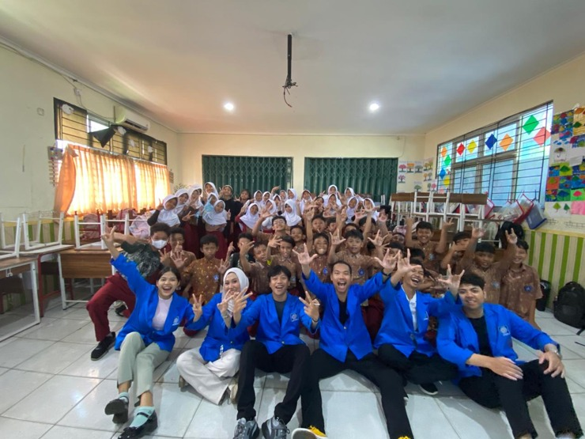
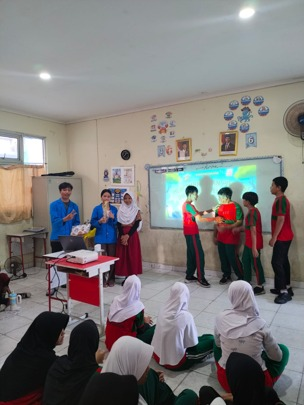
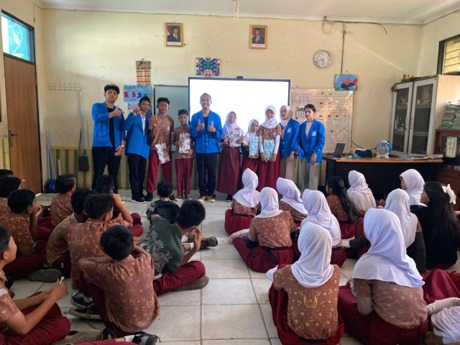
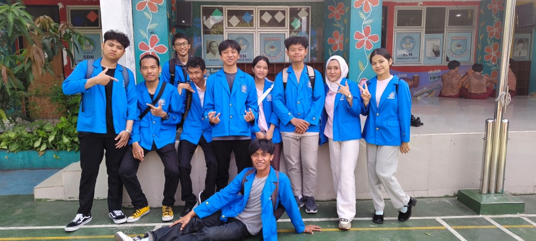

Mahasiswa Semester 3 UBSI Gelar Pelatihan Teknologi untuk Siswa SDN Pondok Kacang Timur 02, Seru dengan Games Edukatif!

Sepuluh mahasiswa semester 3 Program Studi Sistem Informasi (S1) Universitas Bina Sarana Informatika (UBSI) menggelar kegiatan Pengabdian kepada Masyarakat (PkM) mata kuliah Character Building di SDN Pondok Kacang Timur 02, Tangerang Selatan. Kegiatan berjudul “Pelatihan Mengembangkan Potensi Diri Melalui Teknologi” ini mengusung slogan “Belajar, Berinovasi, Meraih Masa Depan Lebih Baik” dan dilaksanakan secara tatap muka.
Kegiatan berlangsung pada Selasa, 3 November 2026, pukul 07.30–09.30 WIB, diikuti 97 siswa kelas 6A, 6B, 6C, dan 6D. Sekolah mitra yang berdiri sejak 10 Oktober 1976 ini terakreditasi A dan dikenal aktif mengembangkan kreativitas siswa melalui program Market Day, ekstrakurikuler menari, serta Projek Penguatan Profil Pelajar Pancasila (P5). Materi yang disampaikan berfokus pada pemanfaatan teknologi secara kreatif, aman, dan bertanggung jawab untuk mengembangkan potensi diri.
“Melalui kegiatan ini, kami ingin membantu siswa memahami bahwa teknologi bukan sekadar hiburan, tetapi juga sarana belajar untuk mengenali potensi diri dan berinovasi secara bijak,” M. Andika Farhansyah, Ketua Pelaksana
Penyampaian materi dipadukan dengan sesi tanya jawab interaktif untuk mengukur pemahaman sekaligus menumbuhkan keberanian siswa. Rangkaian acara dilanjutkan dengan permainan edukatif singkat yang melatih kerja sama dan kepercayaan diri, serta pemberian hadiah apresiasi berupa alat tulis dan perlengkapan belajar kepada siswa yang berpartisipasi aktif.


Tim Pelaksana
- M. Andika Farhansyah (NIM 19250604) (Kontak: 19250604@bsi.ac.id) – Ketua Pelaksana dan Koordinator Kegiatan
- Muhammad Hafizh Ramadhan (NIM 19251193) – Wakil Ketua Pelaksana dan Koordinator Lapangan
- Adi Hermawandi (NIM 19250225) – Tim Pelaksana / Pemateri
- Rafli Hera Sumadi (NIM 19250069) – Tim Pelaksana / Pemateri
- Sahira Nazara Putri Kayla (NIM 19252335) – Tim Pelaksana / Pemateri
- Muhammad Iyas Arkan (NIM 19252261) – Tim Pelaksana / Pemateri
- Rasyiid Nur Rizqi (NIM 19250637) – Tim Pelaksana / Pemateri
- Mico Kurniawan (NIM 19251446) – Tim Pelaksana / Pemateri
- Julita Manalu (NIM 19252543) – Tim Pelaksana / Pemateri
- Wulan Sitompul (NIM 19251461) – Tim Pelaksana / Pemateri

Kolaborasi antara mahasiswa UBSI dan pihak sekolah menunjukkan bahwa teknologi dapat menjadi jembatan pembelajaran yang menyenangkan. Seluruh 97 siswa mengikuti rangkaian acara dengan antusiasme tinggi, aktif merespons pertanyaan pemateri, dan berpartisipasi penuh dalam permainan edukatif hingga kegiatan ditutup pada pukul 09.30 WIB.